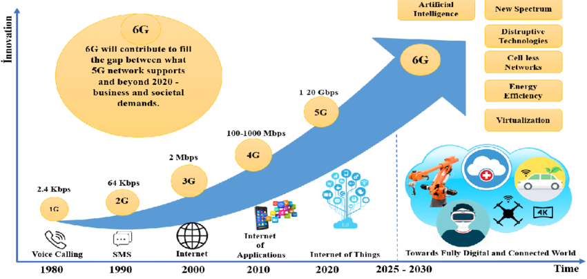
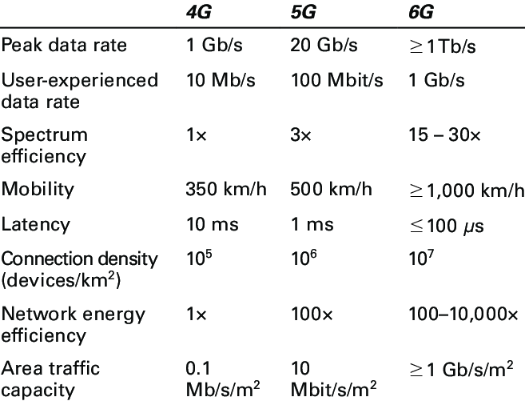
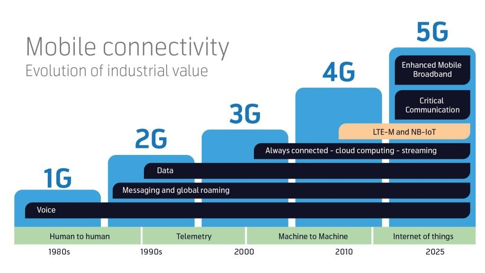

🚀 Projet de veille technologique : La 5G et l’émergence de la 6G
1. Définition de la veille technologique
La veille technologique est une activité stratégique qui consiste à surveiller en permanence l’environnement technologique, à collecter des informations pertinentes sur les innovations, les tendances, les brevets, les normes, les concurrents ou encore les publications scientifiques, afin d’anticiper les évolutions à venir et d’orienter les choix techniques ou organisationnels.
Dans le cadre de ma formation en BTS SIO (Services Informatiques aux Organisations), la veille technologique m’a permis d’approfondir ma compréhension des enjeux numériques et de mieux cerner les transformations qui impactent l’univers de l’informatique. Le choix de me concentrer sur la 5G et la 6G s’explique par le rôle crucial de ces technologies dans l’évolution des télécommunications, des objets connectés, de l’Internet des objets (IoT) et de l’intelligence artificielle embarquée.
La veille technologique me permet non seulement d’accroître mes compétences techniques, mais aussi d’être plus réactif et pertinent dans mes projets professionnels. Elle constitue un atout dans un secteur en perpétuelle mutation.
2. Méthodologie de veille
Outils utilisés : Google Alertes, flux RSS, sites spécialisés (01Net, ZDNet, Journal du Net, ANFR, ARCEP, etc.)
Sources : Sites d’actualités technologiques, publications scientifiques, réseaux sociaux professionnels (LinkedIn)
3. Synthèse des informations collectées
📡 5G – L’état actuel
- Déploiement progressif depuis 2020 en France.
- Vitesse bien supérieure à la 4G, latence réduite, plus de connexions simultanées.
- Cas d’usage : objets connectés (IoT), voiture autonome, industrie 4.0, téléchirurgie, cloud gaming, etc.
🌐 Enjeux et limites de la 5G
- Déploiement complexe nécessitant de nouvelles infrastructures.
- Consommation énergétique accrue.
- Problèmes de sécurité (cybersécurité, souveraineté numérique).
- Controverses et désinformation (ex : liens infondés avec le COVID).
🚀 Vers la 6G
- Prévue aux alentours de 2030.
- Débits potentiellement 100 fois supérieurs à la 5G.
- Objectifs : communication holographique, jumeaux numériques en temps réel, intelligence artificielle intégrée au réseau.
- Acteurs déjà en recherche : Samsung, Nokia, Huawei, Universités américaines et européennes, etc.
4. Impacts dans le monde professionnel
- Opportunités pour les entreprises (nouveaux services, réduction des latences critiques).
- Nouvelles compétences à maîtriser : cybersécurité réseau, gestion de la bande passante, virtualisation.
- Adaptation des infrastructures IT à ces technologies (edge computing, cloud natif, orchestration réseau).
5. Annexes / Captures d’écran / Liens
📊 Graphiques et infographies
- Évolution des réseaux mobiles de la 1G à la 6G
- Comparaison des applications de la 4G, 5G et 6G
- Développement de la 1G à la 5G : Utilisation des appareils
- Évolution de la valeur industrielle de la connectivité mobile




📰 Articles et sources
- France: couverture 5G à 700MHz en 2025 : Statista – Couverture 5G
- La course vers la 6G : Telecom Review – Race to 6G
- Comparaison des applications 4G, 5G, 6G : DHS Infographie
- La France espère un marché 5G de 15 Mds€ : Euractiv – Marché 5G France
- 6G : étape expérimentale avancée attendue : LinkedIn – 6G en 2025